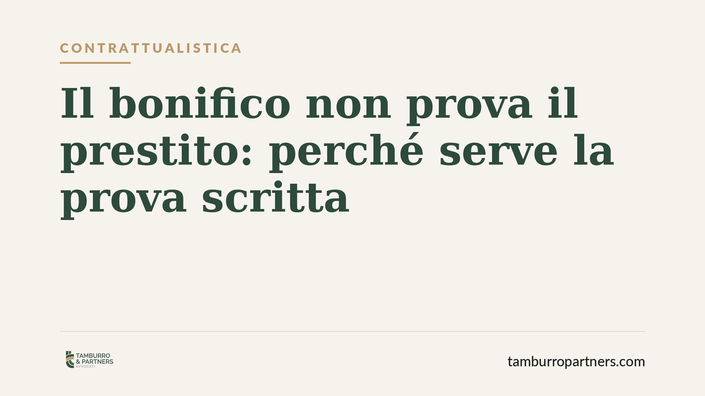

Il bonifico non prova il prestito: perché serve la prova scritta
Prestare denaro a un amico o a un parente con un semplice bonifico sembra sicuro. Non lo è. La Corte d'Appello di Venezia ha ribadito che il trasferimento di somme, da solo, non prova l'esistenza di un prestito né l'obbligo di restituzione. Chi chiede indietro i soldi deve dimostrare la causa del versamento. Vediamo perché e come tutelarsi.

Il caso e la questione
Una persona versa una somma a un'altra tramite bonifico. Passa il tempo, il rapporto si incrina e chi ha erogato il denaro pretende la restituzione, sostenendo si trattasse di un prestito. Il presunto debitore replica: era una donazione, o un adempimento per altra ragione.
Davanti al giudice si scontrano due versioni. La Corte d'Appello di Venezia ha chiarito un punto spesso frainteso: il bonifico prova che il denaro è passato da una parte all'altra, ma non spiega perché. E senza la causa del versamento, non c'è prova del prestito.
Inquadramento normativo
Il principio si fonda sull'art. 2697 del Codice civile, che disciplina l'onere della prova: "Chi vuol far valere un diritto in giudizio deve provare i fatti che ne costituiscono il fondamento".
Tradotto: chi afferma di aver prestato denaro deve dimostrare non solo di averlo dato, ma che tra le parti esisteva un accordo di mutuo, cioè l'obbligo di restituire. Il contratto di mutuo (art. 1813 c.c.) è un contratto con cui una parte consegna una somma e l'altra si obbliga a restituirla.
Il bonifico, in questa cornice, è un documento "neutro": attesta un movimento di denaro compatibile con molte causali diverse. Prestito, restituzione di un debito preesistente, donazione, pagamento di una prestazione. La giurisprudenza è costante: la semplice movimentazione bancaria non basta a qualificare l'operazione come mutuo.
Implicazioni pratiche
Chi eroga denaro senza formalizzare nulla si espone a un rischio concreto. Se il rapporto personale si guasta, recuperare la somma diventa difficile e talvolta impossibile.
Il problema non è solo processuale. La causale del bonifico assume un peso decisivo. Scrivere "regalo" o "contributo" può trasformare, agli occhi del giudice, un prestito in una liberalità non ripetibile. Al contrario, una causale generica non aiuta a dimostrare l'obbligo di restituzione.
Attenzione anche alla posizione di chi riceve. Il beneficiario che voglia contestare la richiesta di restituzione ha interesse a conservare messaggi, accordi o ogni elemento che spieghi la reale natura del versamento.
Questo vale in ambito familiare e amicale, dove la fiducia porta spesso a saltare qualsiasi formalità, ma anche tra soci, colleghi e conoscenti. La confidenza non sostituisce la prova.
Cosa fare in concreto
- Mettete per iscritto l'accordo. Anche una semplice scrittura privata firmata da entrambe le parti, che indichi somma, causale e modalità di restituzione, cambia completamente la posizione processuale.
- Curate la causale del bonifico. Indicate espressamente "prestito infruttifero" o "restituzione entro il [data]". Evitate diciture ambigue o che suggeriscano una donazione, se prestito non è.
- Conservate le comunicazioni. Messaggi, email e chat in cui si parla di restituzione possono integrare la prova mancante. Salvateli e non cancellateli.
- Prevedete termini e rate. Definire una scadenza o un piano di rientro rende l'operazione inequivocabilmente un prestito e non un atto di generosità.
- Per importi rilevanti, valutate un atto formale. Consigliamo di rivolgersi a un professionista per redigere un contratto adeguato all'importo e ai rapporti tra le parti, soprattutto quando entrano in gioco profili fiscali o familiari.
Un principio da non sottovalutare
La pronuncia della Corte d'Appello di Venezia non introduce una regola nuova, ma la ribadisce con chiarezza in un contesto quotidiano. Il denaro tra amici e parenti circola spesso senza documenti, sull'onda della fiducia. Quando il rapporto tiene, nessun problema. Quando si rompe, la fiducia non basta più: conta solo ciò che si riesce a provare.
Formalizzare un prestito non è un segno di diffidenza. È il modo più semplice per proteggere entrambe le parti da malintesi e contenziosi che, in assenza di prova scritta, tendono a risolversi contro chi ha erogato il denaro.
Disclaimer
Contributo informativo a cura di Tamburro & Partners - Avv. Giuseppe Tamburro. Non costituisce parere legale.
Ogni contratto ha il suo equilibrio.
Se vuoi una revisione delle clausole o una redazione su misura, scrivi allo studio. Ti rispondiamo entro un giorno lavorativo.